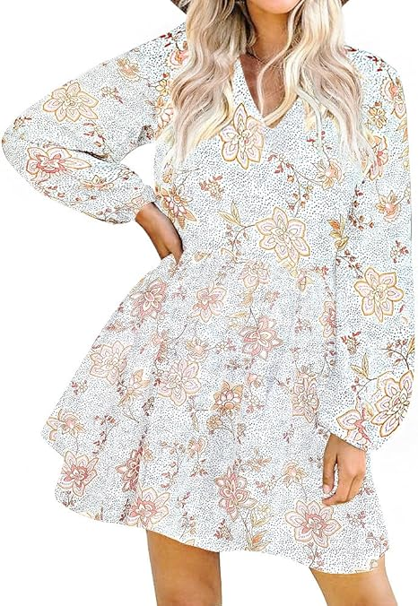

Nuestra Selección de Vestidos

Maxi Bohemio
Siente la libertad con este maxi vestido de estampado fluido, ideal para un look relajado y elegante en tus paseos de verano.
Ver más
Midi Chic
La elegancia se une a la frescura en este vestido midi de corte favorecedor, perfecto para cualquier ocasión, desde un brunch hasta una cena.
Ver más
Mini Atrevido
Irradia juventud y confianza con este mini vestido estampado, ideal para disfrutar del sol y las noches de verano con mucho estilo.
Ver más

Lino Fresco
Descubre la comodidad sofisticada con este vestido de lino, perfecto para mantenerte fresca y elegante durante los días cálidos.
Ver más